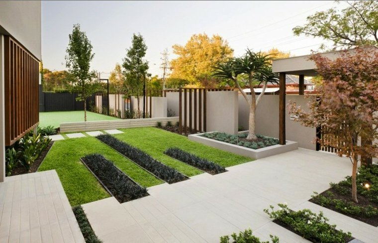
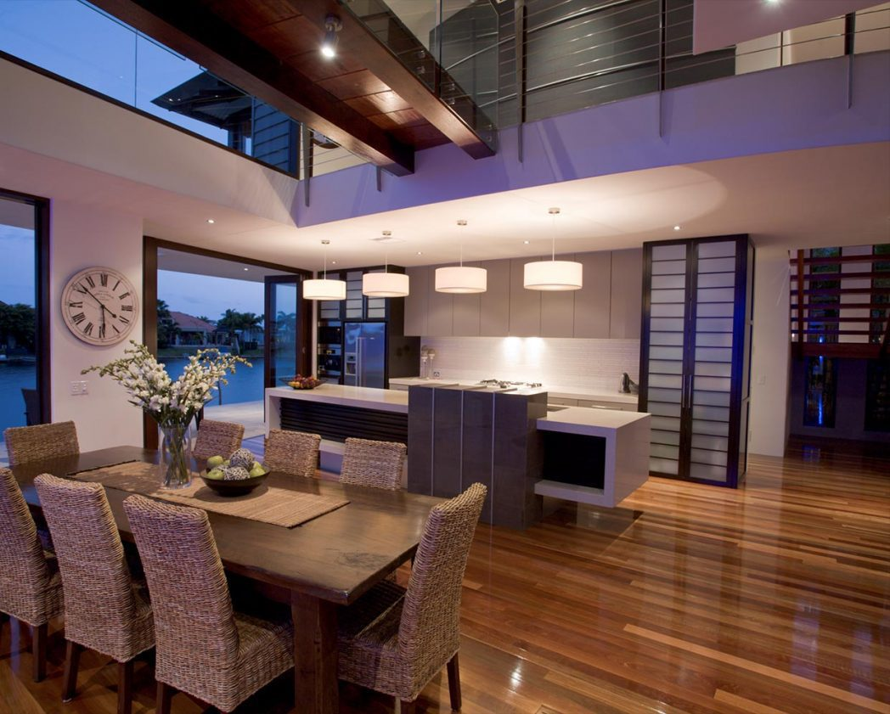
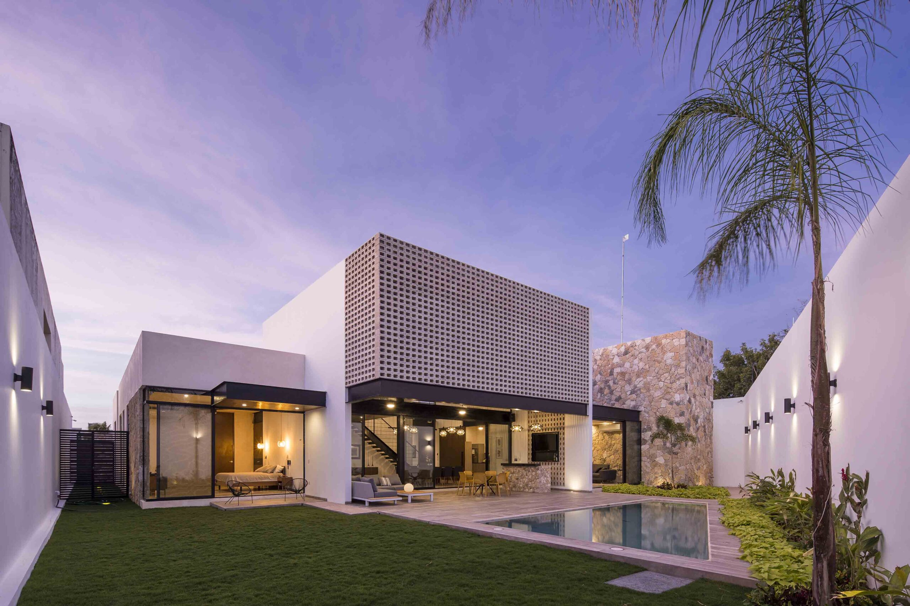

Mi pagina con Bootstrap
Bootstrap es un framework front-end utilizado para desarrollar aplicaciones web y sitios mobile first siendo de esta forma utilizando un layout que se adapta a la pantalla del dispositivo utilizado por el usuario.
| # | Nombre | Paterno | Materno |
|---|---|---|---|
| 1 | Victor Manuel | Anzures | Martinez |
| 2 | Roberto De Jesus | Galdamez | Medina |
| 3 | Jhonatan | Galdamez | Ramirez |
Diseño de exteriores
el diseño de exteriores es el proceso de diseñar y construir el exterior que rodea a un edificio. Dicha técnica incluye la contemplación de aspectos varios como pueden ser el sitio, el paisaje, la iluminación exterior y otros elementos que son de gran importancia.
Más informaciónDiseño de Interiores
El Diseño de Interiores es una disciplina profesional proyectual involucrada en todo el proceso de crear y diseñar el espacio interior con la manipulación del volumen espacial, así como el tratamiento superficial, aplicando los paradigmas, teorías y conceptos que combinen esa manipulación del espacio, con el tratamiento de la superficie, para crear una realidad estética para nuestros sentidos como meta final.
Más informaciónArquitectura de casas
La estructura de una casa está compuesta por el sistema de columnas y vigas, que trabajan en conjunto con las paredes interiores y exteriores para transmitir los esfuerzos generados hacia la cementación.
Más información